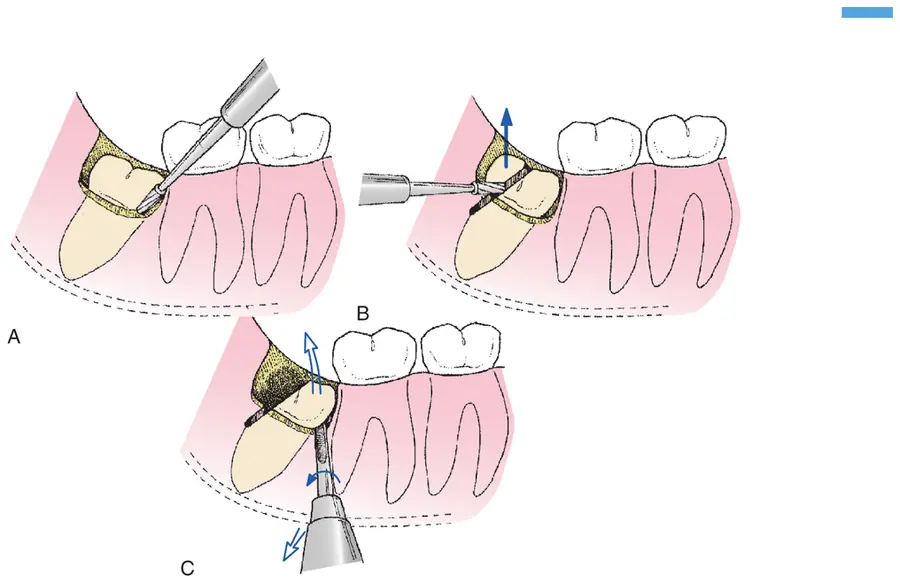
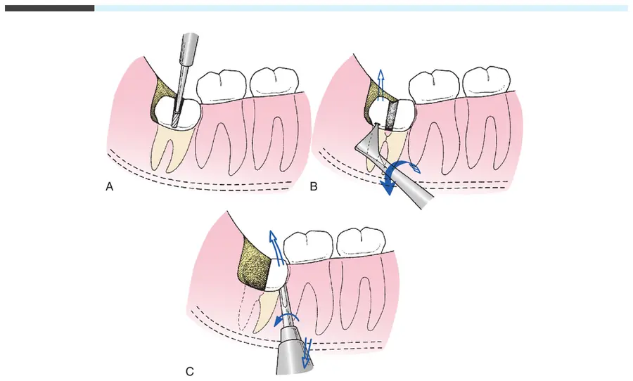

نسخه استخراجشده؛ ترجمه یا تأیید علمی انجام نشده است. وضعیت: captured
جهت تقسیم دندان نهفته عمدتاً به زاویهی دندان نهفته و هر انحنای ریشه بستگی دارد. هرچند برای دندانهای با ریشهی واگرا یا دندانهایی که عمیقتر یا کمعمقتر نهفتهاند اصلاحات جزئی لازم است، مهمترین تعیینکننده زاویهی دندان است.

و مهمترین قاعدهی تکنیکی سکشن: سکشن با بور انجام میشود و دندان تا سهچهارم راه به سمت لینگوال سکشن میشود. بور نباید برای سکشن کردن کامل دندان در جهت لینگوال به کار رود، چون این کار احتمال آسیب به عصب لینگوال را بیشتر میکند. بهجای آن، یک الواتور مستقیم در شکافی که بور ساخته وارد میشود و میچرخد تا دندان را بشکافد.
و حالا چهار زاویه به ترتیب سختی، هر کدام با نقشهی برش خودشان:
۱) مزیوانگولار — کمدشوارترین از چهار نوع پایه. پس از برداشتن استخوان کافی، نیمهی دیستال تاج در شیار باکال تا کمی زیر خط سرویکال در سطح دیستال سکشن و برداشته میشود. باقیماندهی دندان با الواتور شمارهی ۳۰۱ که در سطح مزیال خط سرویکال گذاشته میشود برداشته میشود. راه دوم: با آماده کردن یک purchase point در دندان با دریل و استفاده از الواتور Crane pick برای الویت کردن دندان از ساکت.
۲) افقی — دشواری بعدی. پس از برداشتن استخوان کافی تا خط سرویکال، بهطوری که سطح فوقانی ریشهی دیستال و اکثریت سطح باکال تاج اکسپوز شود، دندان با جدا کردن تاج از ریشهها در خط سرویکال سکشن میشود. تاج برداشته میشود، و ریشهها با الواتور Cryer به فضایی که پیشتر تاج اشغال کرده بود جابهجا میشوند. اگر ریشههای مولر سوم نهفته واگرا باشند، ممکن است لازم باشد به دو بخش جدا سکشن شوند تا جداگانه تحویل شوند.
۳) عمودی — یکی از دو دشوارترین نوع. روال برداشت استخوان و سکشن شبیه مزیوانگولار است: استخوان اکلوزال، باکال و دیستال برداشته میشود، نیمهی دیستال تاج سکشن و برداشته میشود، و دندان با گذاشتن الواتور در سطح مزیال خط سرویکال الویت میشود. ولی این از برداشتن مزیوانگولار دشوارتر است، چون دسترسی به اطراف مولر دوم مندیبل سخت به دست میآید و برداشتن استخوان بهطور اساسی بیشتری در سمت باکال و دیستال لازم است.

۴) دیستوانگولار — دشوارترین دندان برای برداشتن. پس از برداشتن استخوان کافی از سمت باکواکلوزال و دیستال، تاج درست بالای خط سرویکال از ریشهها سکشن میشود. معمولاً کل تاج برداشته میشود، چون با دید و دسترسی به ساختار ریشهی دندان تداخل میکند. اگر ریشهها جوشخورده باشند، یک الواتور Cryer یا مستقیم میتواند دندان را به فضایی که پیشتر تاج اشغال کرده بود الویت کند؛ اگر واگرا باشند، معمولاً به دو قطعه سکشن و جداگانه تحویل میشوند. کشیدن این نهفتگی دشوار است چون هم استخوان دیستال بسیار زیادی باید برداشته شود، و هم دندان هنگام الویت شدن تمایل دارد به سمت دیستال بچرخد و به بخش راموس مندیبل بخورد.
و در ماگزیلا؟ دندانهای نهفتهی ماگزیلا بهندرت سکشن میشوند، چون استخوان رویی معمولاً نازک و نسبتاً کشسان است. در موقعیتهایی که استخوان ضخیمتر است یا بیمار مسنتر است (و در نتیجه استخوان چندان کشسان نیست)، کشیدن دندان معمولاً با برداشت استخوان انجام میشود، نه با سکشن دندان.
و یک قاعدهی کلی برای بقیهی دهان: بهطور کلی دندانهای نهفته در جاهای دیگر دهان معمولاً تنها در خط سرویکال سکشن میشوند. این اجازه میدهد بخش تاج برداشته شود، بخش ریشه به فضایی که پیشتر تاج اشغال کرده بود جابهجا شود، و ریشه برداشته شود.
گام ۴ — تحویل. در مندیبل، پرکاربردترین الواتورها الواتور مستقیم، جفت الواتور Cryer، یا Crane pick هستند. الواتورها طراحی شدهاند نه برای اعمال نیروی بیش از حد، بلکه برای درگیر کردن دندان یا ریشه و اعمال نیرو در جهت درست. بعضی جراحان از root tip pick برای برداشتن ریشههای سکشنشده از ساکتشان استفاده میکنند.
و یک نکتهی بیولوژیک که کار را ممکن میکند: چون دندان نهفته هرگز نیروهای اکلوزالی را تحمل نکرده، لیگامان پریودنتالش ضعیف است و اجازهی جابهجایی ریشه را میدهد — به شرطی که استخوان مناسب برداشته شده و نیرو در جهت درست وارد شود.
تحویل مولرهای سوم ماگزیلا با الواتورهای مستقیم کوچک انجام میشود که دندان را به سمت دیستوباکال لوکسیت میکنند. بعضی جراحان الواتورهای زاویهدار مثل Potts، Miller یا Warwick را ترجیح میدهند که به دسترسی به دندان نهفته کمک میکنند. نوک الواتور در ناحیهی خط سرویکال مزیال وارد میشود و فشار برای جابهجا کردن دندان در جهت دیستوباکال اعمال میشود.
دو احتیاط در تحویل ماگزیلا:
گام ۵ — آمادهسازی برای بستن زخم، به ترتیب:
کنترل خونریزی. جراح باید هموستاز کافی را بررسی کند. خونریزی میتواند از یک رگ در فلپ، از مغز استخوانی که با بور بریده شده، یا از عروق آلوئولار تحتانی باشد. نقاط خونریزی مشخص باید کنترل شوند اگر وجود داشته باشند.
اگر ترشح منتشر و تند پس از گذاشتن بخیهها دیده شد، جراح باید با یک گاز مرطوب کوچک فشار محکم اعمال کند. خونریزی پس از عمل تا حدی نسبتاً مکرر پس از کشیدن مولر سوم رخ میدهد، ولی معمولاً اگر هموستاز کافی در زمان عمل به دست آمده باشد خودمحدودشونده است.
در این نقطه، بسیاری از جراحان یک آنتیبیوتیک مثل تتراسایکلین را داخل ساکت مولرهای سوم پایین میریزند تا به پیشگیری از دراسکت کمک کنند.
و بستن نهایی: بستن برش مولر سوم نهفته معمولاً یک بستن اولیه است. اگر فلپ خوب طراحی شده و حین جراحی تروما ندیده باشد، در موقعیت اولیهی خودش جا میافتد. بخیهی اول باید از میان بافت چسبنده در سطح خلفی مولر دوم زده شود؛
بخیههای بعدی از آن موقعیت به سمت خلف و به سمت قدام از میان پاپیلای سمت مزیال مولر دوم گذاشته میشوند. معمولاً تنها دو یا سه بخیه برای بستن یک برش پاکتی لازم است. اگر برش رهاساز به کار رفته، باید به بستن آن بخش هم توجه شود. و اگر فلپ مولر سوم ماگزیلا پس از عمل بهطور غیرفعال سر جایش بماند، ممکن است بخیه لازم نباشد.